Hướng dẫn tạo trò chơi tô hình bằng đáp án trắc nghiệm
Người chơi trả lời các câu trắc nghiệm, rồi tô đen những ô ghi đáp án đúng. Tô xong sẽ hiện ra bức hình. Làm theo 2 phần: A. biến một ảnh bất kỳ thành ảnh lưới ô đen/trắng, B. dùng tool để gắn đáp án vào từng ô rồi in ra.
PHẦN A Tạo ảnh lưới từ ảnh bất kỳ
Dùng trang miễn phí ascii-magic.com để biến ảnh thành lưới ô vuông đen/trắng. Không cần đăng ký. Nên chọn ảnh nét rõ, ít chi tiết (hình vẽ, logo, bóng đen…), vì mỗi ô chỉ có thể đen hoặc trắng.
1Mở trang và đóng popup giới thiệu
Vào https://www.ascii-magic.com/app. Lần đầu mở sẽ có popup giới thiệu — bấm nút ✕ 1 để đóng.
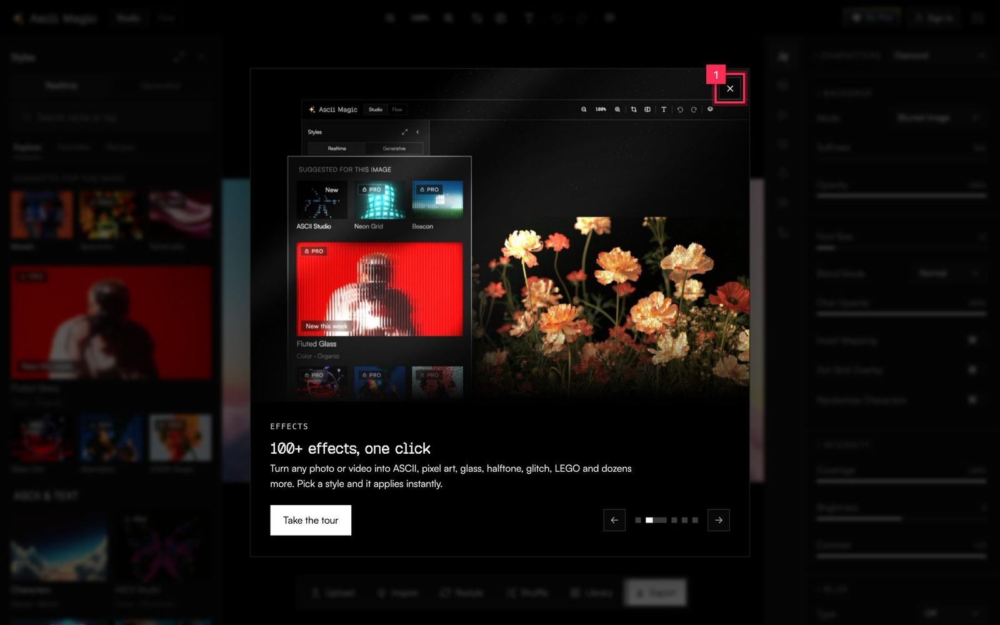
3Chọn kiểu Pixel Art
Ở góc trên bên phải, mục CHARACTERS, mở menu thả xuống 3 và chọn Pixel Art.
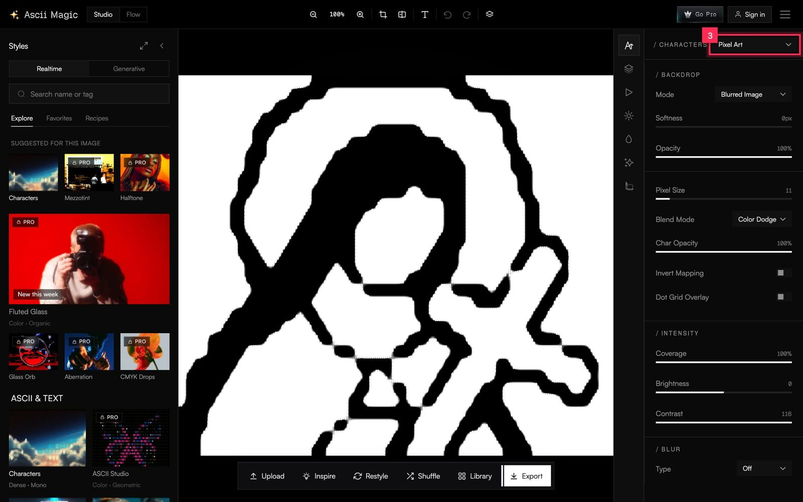
4Cài đặt để ra ảnh chỉ có đen và trắng
| Mục | Giá trị | Tác dụng | |
|---|---|---|---|
| 4 | Backdrop → Mode | Solid Black | Nền đen trơn, không lẫn ảnh gốc mờ phía sau |
| 5 | Char Opacity | 100% | Ô rõ nét, không trong suốt |
| 6 | Intensity → Brightness | 100 (kéo hết sang phải) | Phần sáng thành ô trắng hẳn |
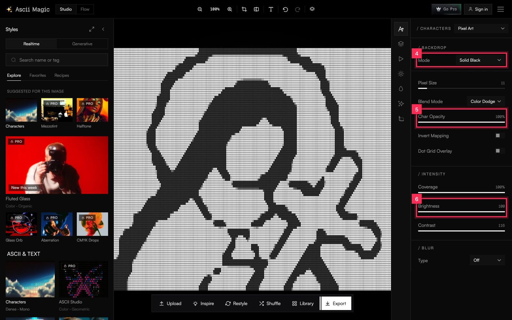
5Canh Pixel Size và Coverage cho vừa ý
- Pixel Size 7 — độ to của ô. Số càng lớn thì ô càng to, số ô càng ít (hình thô hơn nhưng dễ tô hơn). Số càng nhỏ thì hình càng chi tiết nhưng có rất nhiều ô.
- Coverage 8 — quyết định bao nhiêu phần của ảnh thành ô đen. Kéo thấp xuống thì nét đen dày ra, các vùng xám chuyển thành đen; kéo cao thì chỉ phần thật tối mới đen.
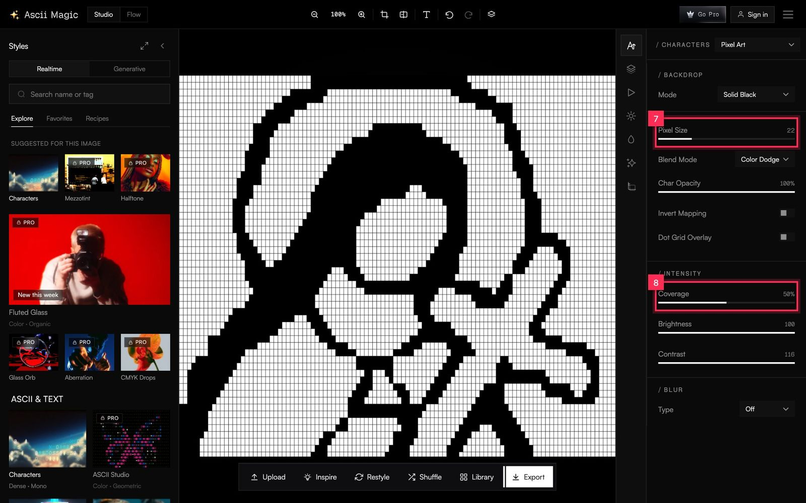
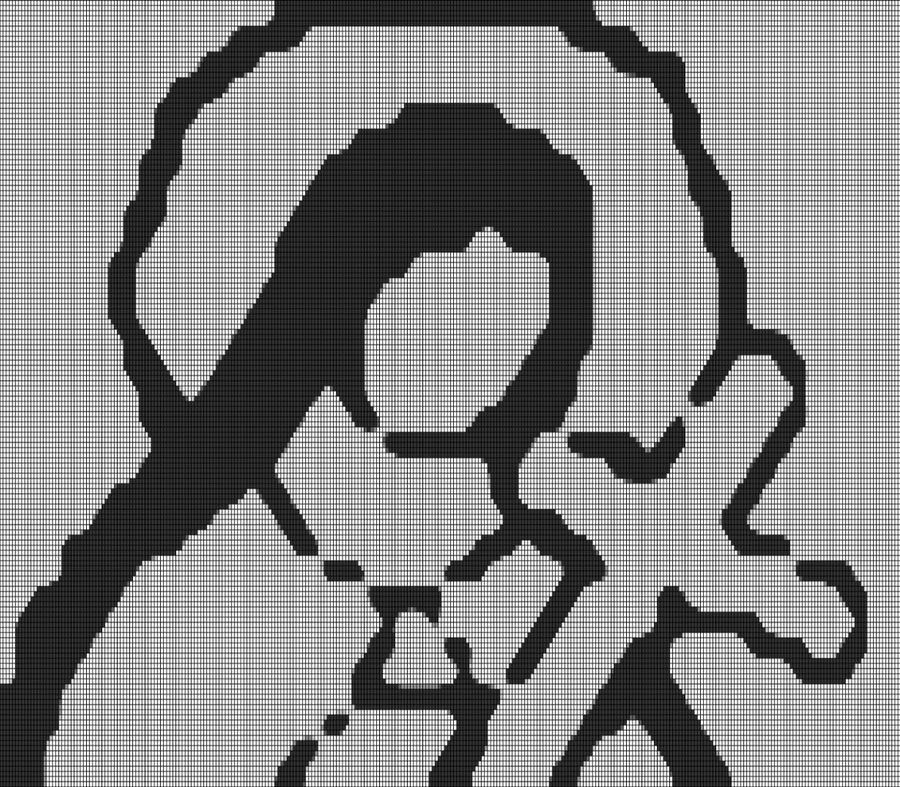
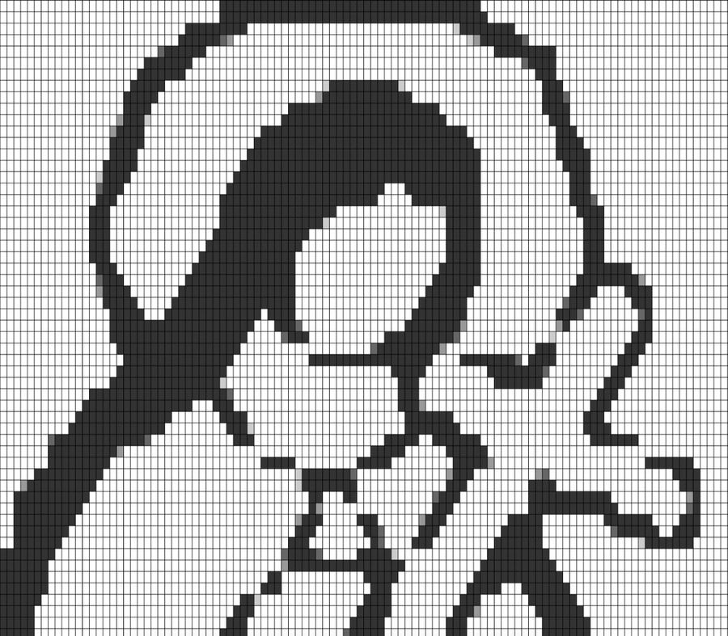
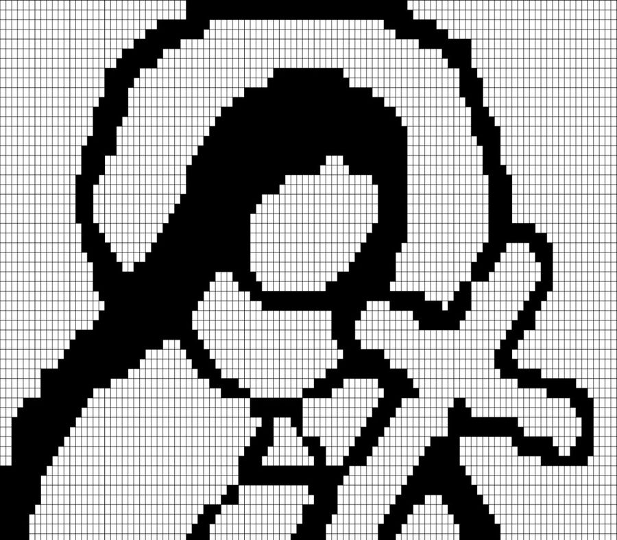
6Export ảnh về máy
Bấm Export ở thanh dưới cùng. Trong bảng hiện ra, chọn định dạng PNG 9, giữ độ phân giải 2× rồi bấm Export PNG 10. File PNG sẽ được tải về thư mục Downloads.
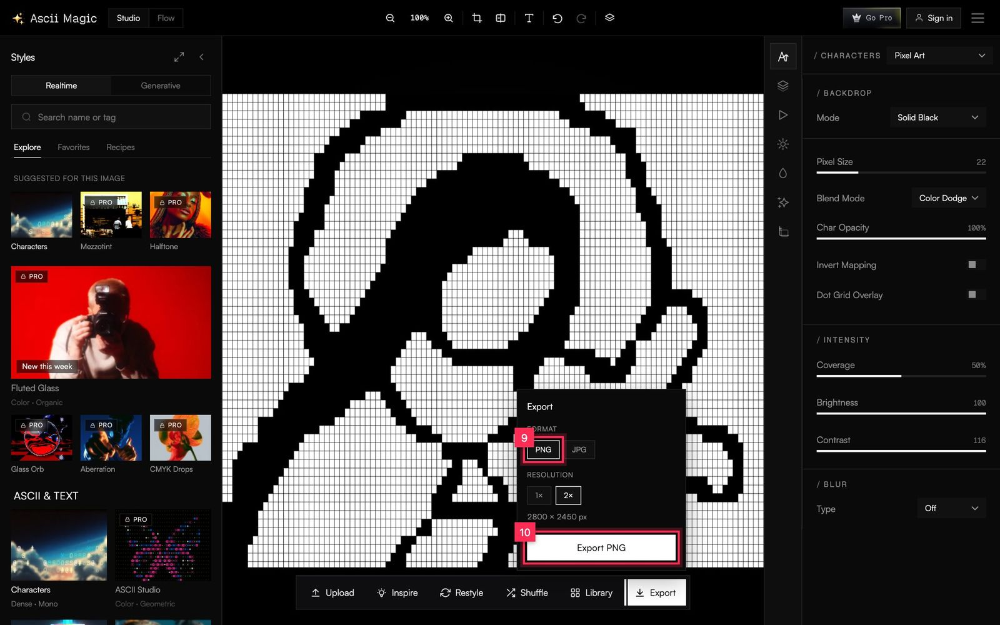
PHẦN B Dùng tool Tô Hình Đáp Án
Mở file index.html bằng Chrome hoặc Safari (bấm đúp vào file). Mọi thứ bạn làm được tự lưu trong trình duyệt — đóng mở lại vẫn còn. Không cần mạng.
0Làm quen với màn hình
Cột bên trái là 4 bước làm theo thứ tự 1–4. Phía trên có nút gạt Chỉnh sửa / Xem trước 5 và nút In / PDF 6. Nút Hướng dẫn i bật/tắt thẻ hướng dẫn nhanh ở đầu cột trái.
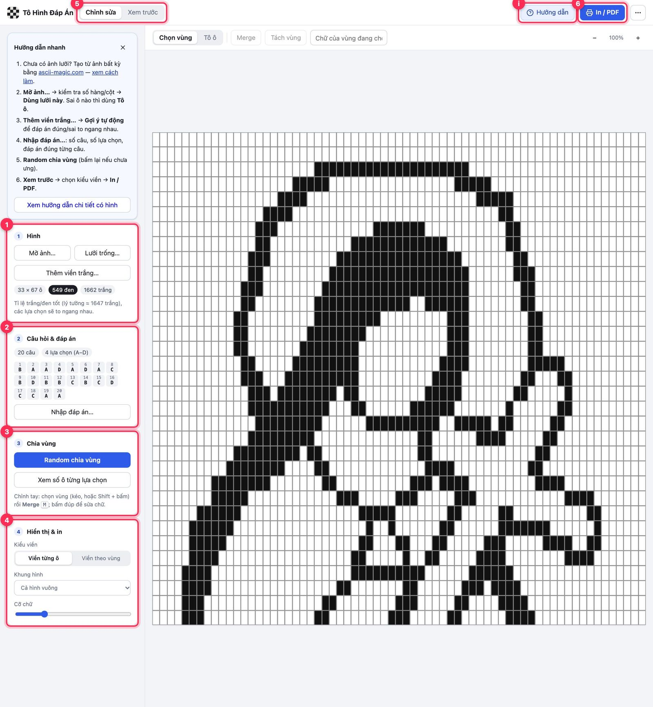
1Mở ảnh lưới vừa export
Bấm Mở ảnh… 1 và chọn file PNG tải từ ascii-magic.
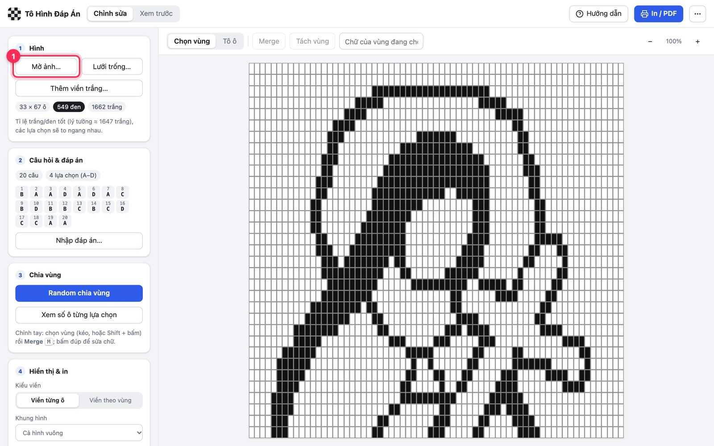
Tool tự nhận số hàng/cột và ô nào đen. Trong popup:
- 1 Kiểm tra Số hàng / Số cột. Nếu lưới xem trước lệch so với ảnh, sửa lại cho đúng. Kéo Độ đậm nếu nhiều ô bị nhận sai màu.
- 2 Xem trước lưới sẽ dùng.
- 3 Bấm Dùng lưới này.
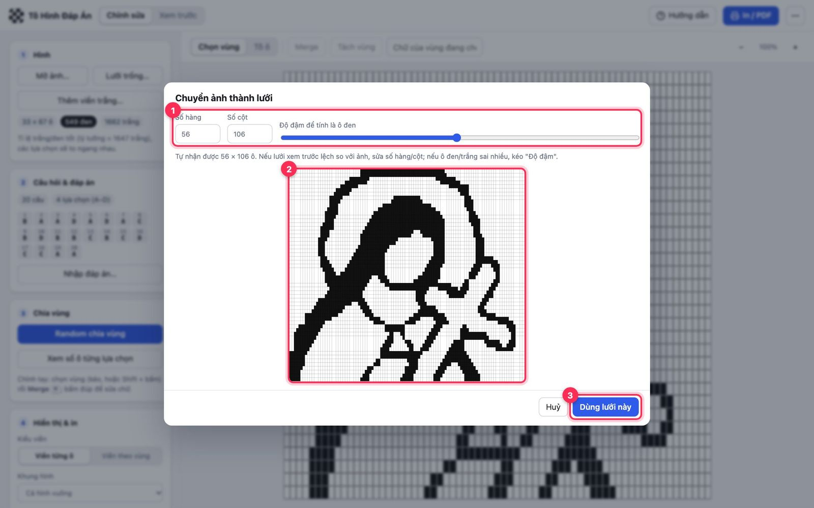
2Thêm viền trắng để các đáp án to ngang nhau
Mỗi câu có 1 đáp án đúng (ô đen) và các đáp án sai (ô trắng). Để người chơi không đoán được đáp án qua kích thước vùng, số ô trắng nên gấp khoảng (số lựa chọn − 1) lần số ô đen — với 4 lựa chọn là gấp 3. Thẻ Hình sẽ báo nếu đang thiếu hoặc dư ô trắng.
- 1 Bấm Thêm viền trắng…
- 2 Bấm Gợi ý tự động — tool tự tính số hàng/cột viền cần thêm (trên, trái, phải).
- 3 Bấm Thêm viền.
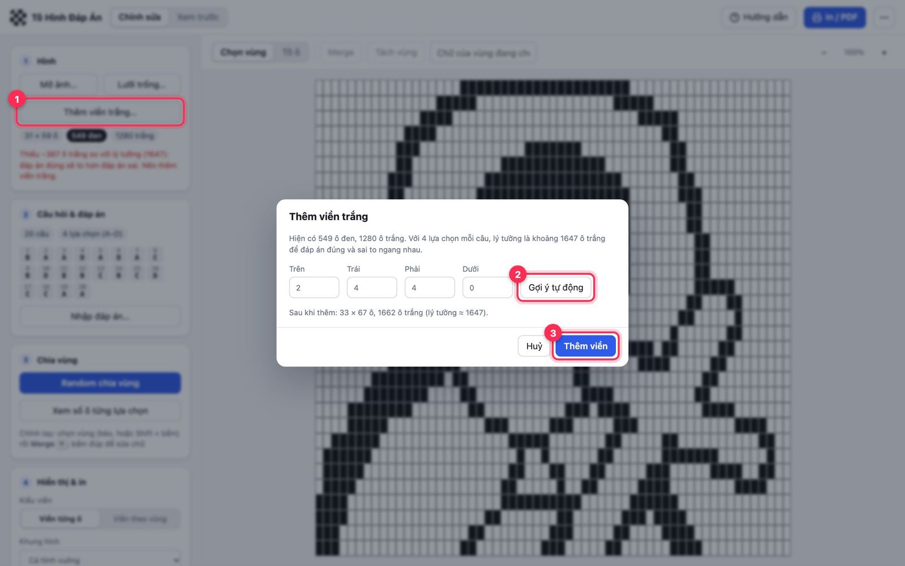
3Nhập câu hỏi và đáp án đúng
Bấm Nhập đáp án… ở thẻ Câu hỏi & đáp án:
- 1 Số câu hỏi.
- 2 Số lựa chọn mỗi câu (2–6, ví dụ A–D là 4).
- 3 Dán nhanh: gõ cả dãy đáp án như
BAADADAC…hoặc1B 2A 3Crồi bấm Áp dụng. - 4 Hoặc bấm chọn đáp án đúng cho từng câu.
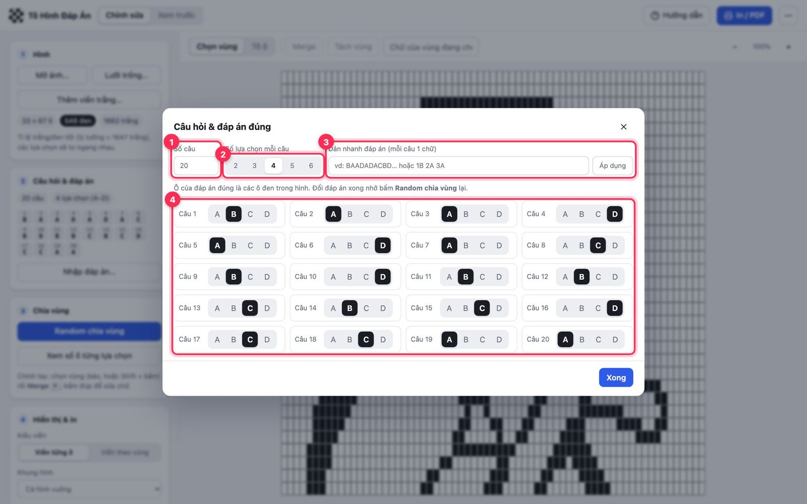
4Random chia vùng
Bấm Random chia vùng 1. Sau vài giây, mỗi ô sẽ được ghi một lựa chọn (ví dụ 12 trên B = câu 12, đáp án B). Các ô cùng một lựa chọn luôn nằm liền nhau. Chưa ưng thì bấm lại để ra phương án khác.
- 2 Xem số ô từng lựa chọn — bảng thống kê, đáp án đúng tô đen.
- 3 4 Chỉnh tay (không bắt buộc): chọn vùng bằng cách kéo chuột hoặc giữ Shift rồi bấm, sau đó Merge (phím M) để gộp, Tách vùng để tách. Bấm đúp vào một vùng để sửa chữ.
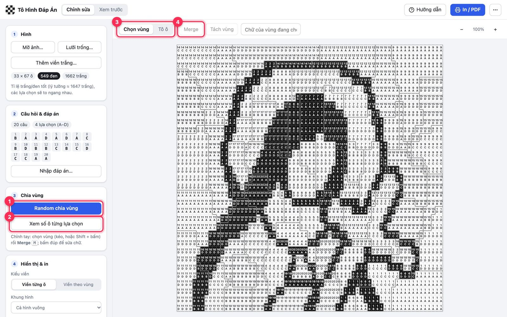
5Xem trước và in ra giấy
- 1 Gạt sang Xem trước để thấy đúng bản sẽ in (không tô đen).
- 2 Chọn kiểu viền: Viền từng ô (bảng kẻ ô, mỗi ô có chữ) hoặc Viền theo vùng (chỉ viền quanh mỗi đáp án, chữ ghi một lần).
- 3 Khung hình: giữ hình vuông, ô vuông, hoặc đúng tỉ lệ ảnh gốc (tự chọn khi mở ảnh).
- 4 Bấm In / PDF. Muốn file PDF thì chọn Save as PDF / Lưu dưới dạng PDF trong hộp thoại in.
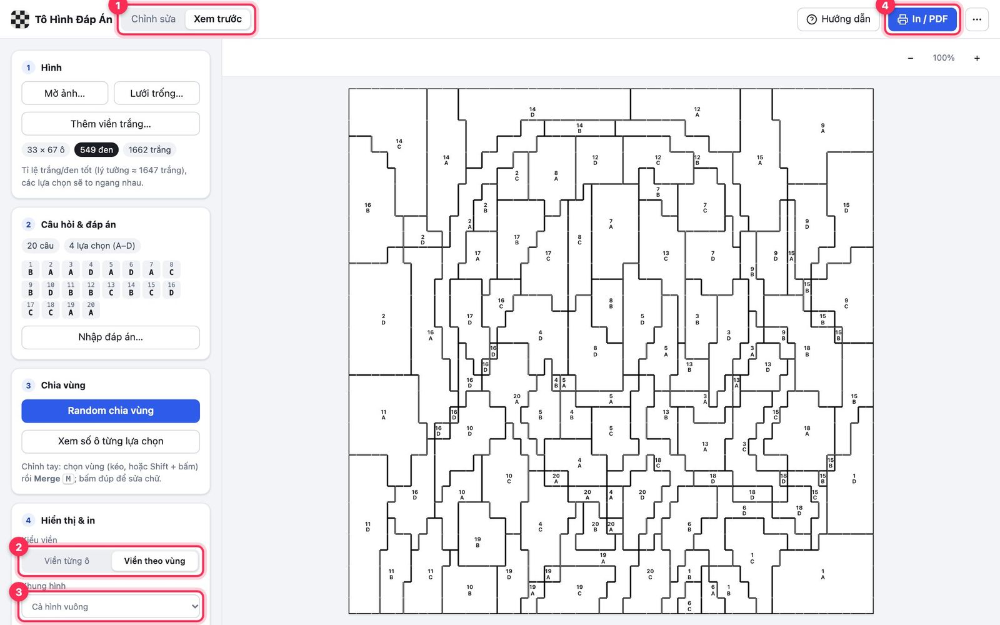
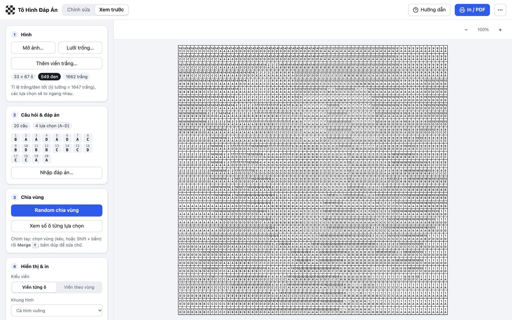
6Lưu, mở lại và làm hình mới
Menu ⋯ ở góc trên bên phải:
- 1 Lưu file dự án (.json) — để gửi cho người khác hoặc dùng trên máy khác.
- 2 Mở file dự án… — mở lại file .json đã lưu.
- 3 Xoá hết, bắt đầu lại — xoá toàn bộ dữ liệu đã tự lưu, quay về hình mẫu. Không hoàn tác được.
Menu này còn có Tải ảnh vector (SVG) để gửi tiệm in hoặc chỉnh trong Illustrator/Inkscape.
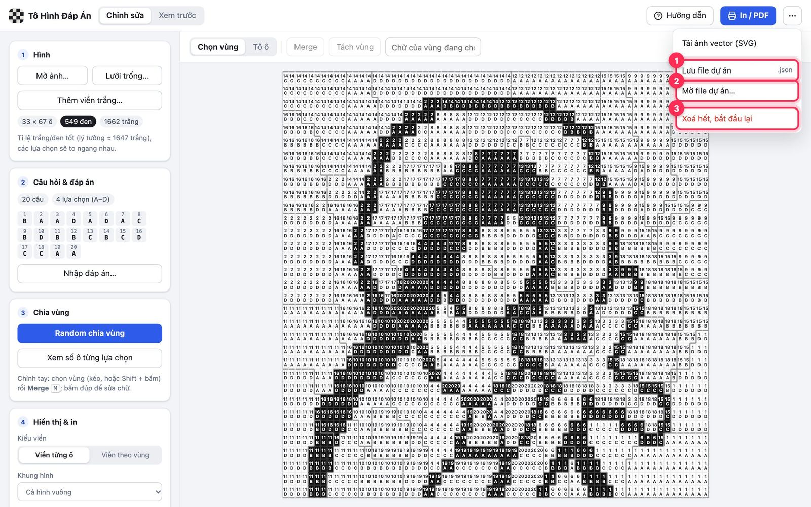
Mẹo & câu hỏi thường gặp
- Bấm "Mở ảnh…" không có gì xảy ra?
- Hãy mở file bằng Chrome hoặc Safari (bấm đúp vào file trong Finder). Khung xem trước bên trong một số app không cho chọn file.
- Tool báo "Hình có N cụm ô đen rời nhau nhưng chỉ có M câu"?
- Mỗi cụm ô đen rời phải thuộc đáp án đúng của một câu. Hãy tăng số câu, hoặc dùng Tô ô nối các cụm nhỏ lại / xoá các chấm đen lẻ.
- Đổi đáp án sau khi đã chia vùng?
- Được, nhưng phải bấm Random chia vùng lại để ô đen khớp với đáp án mới.
- Có vài lựa chọn chỉ 1–3 ô?
- Thường do các chấm đen rất nhỏ trong hình. Bấm Random lại, hoặc xoá bớt chấm lẻ bằng Tô ô.
- Dữ liệu lưu ở đâu?
- Trong chính trình duyệt trên máy bạn. Đổi máy hoặc trình duyệt thì dùng Lưu file dự án / Mở file dự án….